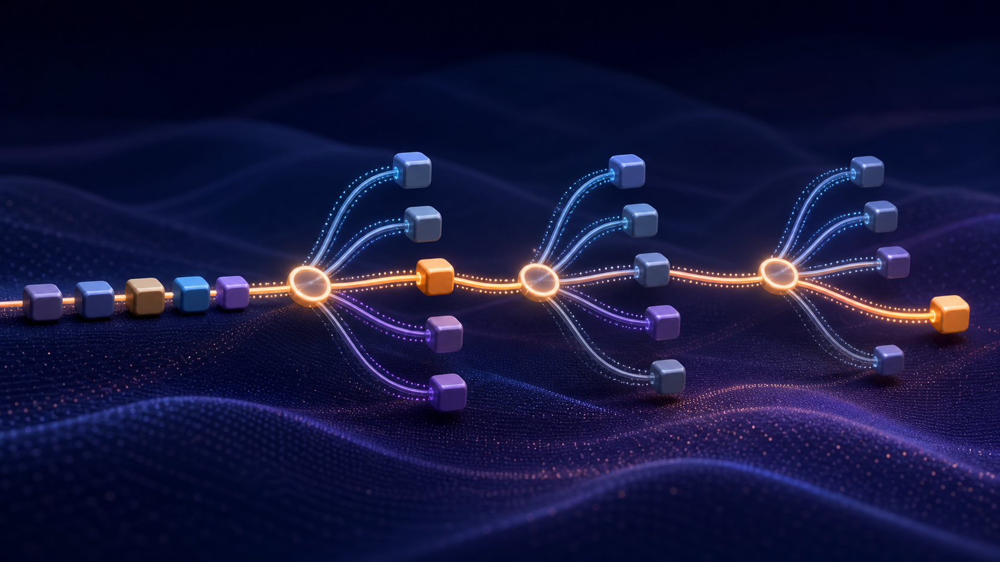

Token
tokenizer 按既定规则把文本拆分后，模型用于编码和预测的离散单元。
第 02 课 · 训练 → 生成 → 行动
当你看到一段流畅回答时，模型究竟在每一步计算什么，又没有计算什么？

起点
LLM 操作的离散单位是 token；它可能是词的一部分、标点或多个字符，不能机械地等同于一个汉字或一个单词。
tokenizer 按既定规则把文本拆分后，模型用于编码和预测的离散单元。
一句话由不同大小的积木拼成。
对应关系：token 是模型处理文本的积木单位。
类比边界：不同 tokenizer 的切法不同，积木边界并不天然等于语言中的词义边界。
Tokenizer 会把每个 token 映射为整数 Token ID；ID 只是索引，没有天然的大小或语义顺序。
表示
Embedding 将离散 Token ID 查表成稠密向量；位置信息告诉模型同一 token 出现在序列的哪个位置。
“猫追狗”与“狗追猫”使用相似 token，但位置不同导致关系不同。
向量描述队员特征，座位号保留其在队列中的顺序。
对应关系：Embedding 提供可计算特征，位置信息防止序列变成无序集合。
类比边界：向量的单个维度通常不对应一个可直读的人类概念。
输入 Transformer 的初始表示结合了 token 与位置；经过多层计算后，同一 token 在不同上下文中会形成不同的上下文表示。
计算
在每一步预测前，Transformer 用 Attention 让当前位置有选择地聚合上下文信息，再经过逐位变换得到新表示。
在“订单已经取消，它何时退款？”中，后续表示会更关注“订单”“取消”“退款”等相关位置。
模型可见的只是被送入窗口的内容；窗口外信息不会自动参与本次计算。
最小工作链可写成：Embedding 与位置→Attention 聚合→前馈网络变换→输出层得到候选 token 分数与概率分布。
选择
模型先形成候选 token 的概率分布，再依解码策略选择一个 token，并将它加入上下文重复这一过程。
依据模型给出的候选概率及解码规则选出下一个 token 的过程。
每条路有不同通行权重，策略决定优先走最宽路还是保留一些探索。
对应关系：解码策略影响生成的稳定性和多样性。
类比边界：较高概率只表示模型更倾向该续写，不是对事实的证明。
Temperature 通过缩放候选分数改变分布尖锐程度；它不修改已训练参数，也不会为模型补入缺失事实。
累积
每选出一个 token，它都会成为新的当前上下文的一部分，因此早期偏差可能被后续文本延续。
若开头虚构了一个日期，后续句子可能围绕这个日期继续自洽地展开。
流畅和前后一致不等于外部世界中真实发生过该事件。
自回归意味着第 t 步的输出会进入第 t+1 步的输入；因此长文错误不是独立抽样，而可能沿已生成路径累积。
训练关系
语言模型训练会让模型在大量上下文中提高真实后续 token 的概率；推理时则计算 P(下一个 Token | 当前上下文)。
对 token 序列建立概率分布，并可根据上下文预测或生成后续 token 的模型。
预测语言模式并没有内置浏览、引用、计算或执行动作；这些需要额外系统能力。
P(下一个 Token | 当前上下文) 表示在已知当前可见上下文时，下一 token 的条件概率。
系统指令、用户提示、对话历史与检索片段会竞争有限的上下文窗口；超出窗口或未被送入的信息不会自动参与计算。
事实
模型参数中的知识可能过时、缺失或混杂；对可追溯事实，系统应检索可信材料并让人或程序核验。
在生成时检索外部非参数化记忆，并将检索结果作为模型上下文的架构或方法。
先找到可引用的资料页，再据页内内容作答。
对应关系：检索把外部材料带到生成上下文。
类比边界：找到资料不等于资料可靠、切片相关或模型一定忠实引用；仍需要来源与答案评估。
诊断应拆开四层：参数中是否有模式、上下文是否提供证据、检索是否命中正确材料、生成是否忠实使用材料。
复盘
逐 token 概率计算能产生复杂语言行为，但产品质量还取决于提示词、检索、工具、约束和评估。
输入被切成什么 token？哪些上下文实际可见？解码是否稳定？哪些事实需要外部证据？
把语言模型理解为条件分布的逐步生成器，比把它拟人化为“先想好整段答案”更准确。
幻觉、过时知识、提示词敏感与回答不一致都可从“有限上下文下的概率生成”理解，但它们不是同一种失败。
关键词学习
选择一个词，比较它的释义、例子和适用边界。禁用 JavaScript 时，每个词的完整说明仍会保留在词条下方。
自测
先在心里作答，再展开参考答案。禁用 JavaScript 时，答案会直接显示。
参考答案：给定当前上下文时下一 token 的条件概率。
它是条件概率表达，不应被解释成模型经历了人类式的思维过程。
参考答案：Embedding 将 Token ID 变成向量，位置信息保留序列顺序。
只有 token 向量而无位置线索，会丢失“谁在谁前后”的基础信息。
参考答案：概率反映模型的续写倾向，不是外部证据。
训练目标是建模语言分布，真实世界的更新和可追溯性需要额外机制。
参考答案：候选分布通常更平缓，低分候选被选中的相对可能性增加。
这改变的是解码分布，不是模型知识和参数。
课内实验
完成交互后，再用下面的练习清单把结果转化为本课产物。
给定上下文“南京今天的天气很___”，下面四个候选 Token 来自固定数据。温度控件只在本地重算分布，不请求任何模型。
当前上下文：南京今天的天气很___
选择温度后，观察概率集中度；候选排序由预置概率重排。
成功信号：能够逐步解释生成路径，并把“概率较高”与“事实已证实”分开。